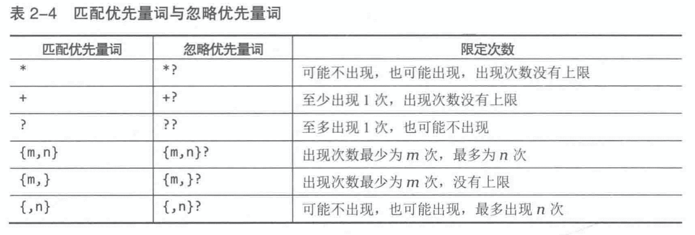
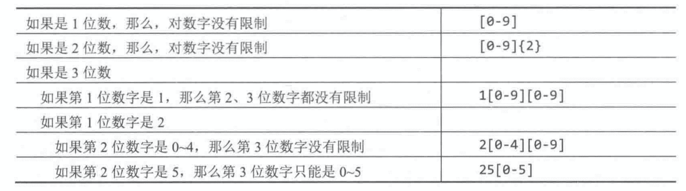
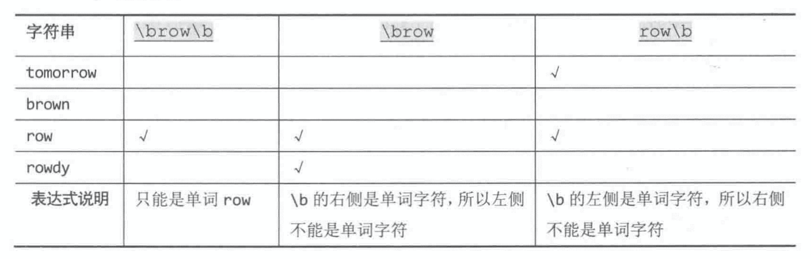
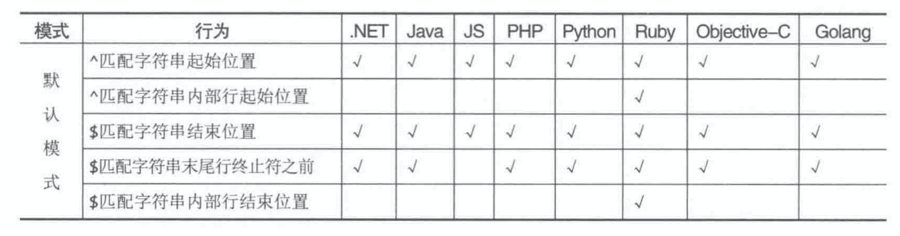
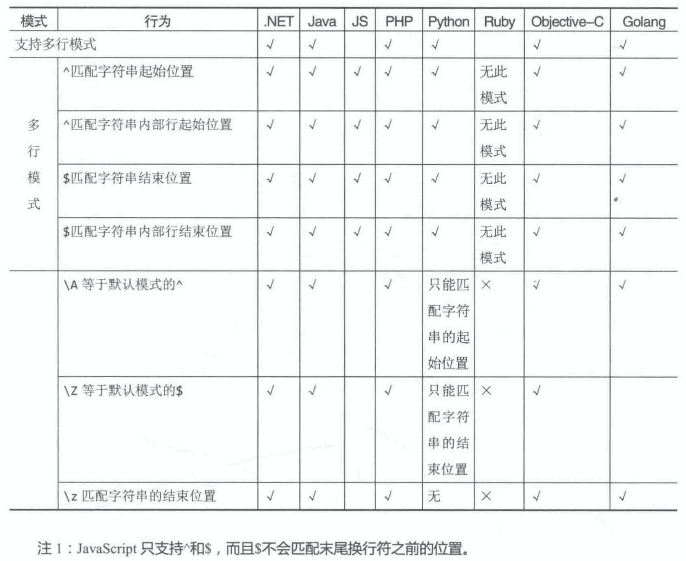
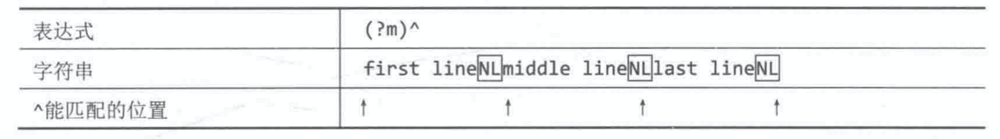
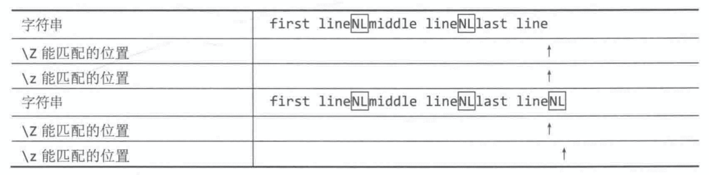
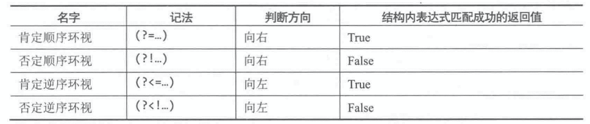

《正则指引（第二版）》读书笔记
旧书清理系列。正好赶上新出不久的第二版，年前暂时不读“板砖”了，找点薄的速读一下。
（仅记录 PCRE 相关的正则用法，Posix 等其他用法略。不重要的章节略）
第 1 章 - 字符组
- Page 2字符组：
- 表示“在同一个位置可能出现的各种字符”（只能匹配一个字符）。
// 只要出现字符组中的任意字符即匹配成功；
/[12345]/.test('F1'); // true.
/[1-5]/.test('F1'); // 范围表示法；
/[0-9a-zA-Z]/.test('Hello');
/[\x00-\x7f]/.test('Hello'); // 匹配全 ASCII 码表；
- “范围表示法”的字符范围是根据 “-” 符号两端字符的 ASCII 码值来确定的（小-大）；
- 可以使用 “\x” 的方式来匹配不可打印或不好打印字符（如“非本地文字”）；
- 转义“元字符”：（当正则是以“字符串”形式给出时，“\” 需要用 “\” 代替。否则会被当做非法的转义字符）。
/[0\-9]/.test('0-9'); // true.
- 完全匹配：整个字符串需要完全与正则匹配。
// 正则只能匹配一个字符，而字符串多于一个字符；
/^[12\]345]$/.test('2345'); // false.
// 整个字符串的完全匹配；
/^\[2345]$/.test('[2345]'); // true.
- “排除型”字符组：（必须匹配一个字符）。
/^[^0-9][0-9]$/.test('A2'); // true.
- 字符组简记法（ASCII 匹配规则）：
- \d：等价于 [0-9]（数字）；
- \w：等价于 [0-9a-zA-Z_]（单词字符）；
- \s：等价于 [ \t\r\n\v\f]（空白字符）；
- \D：与 \d 互补；
- \W：与 \w 互补；
- \S：与 \s 互补。
// 匹配十六进制字符；
/^[\da-zA-Z]$/.test('F'); // true.
/^[^\d]$/.test('_'); // true.
/^\d$/.test('8'); // true.
// 匹配所有字符；
/^[\s\S]*$/.test('Hello, world!'); // true.
- 转义：对于一般形式的字符组
[a-z]，转义时仅需要给第一个字符添加反斜线即可，即 “\[a-z]”。
第 2 章 - 量词
- Page 17量词：
- 可用于指定“匹配的次数”；
- 通常，可匹配次数的上限为 65536 次（实现相关，一般认为不存在上限）。
/^[\d]{6,8}$/.test('123456'); // true.
/^[\d]{4,}$/.test('123456'); // true.
/^[\d]{4}$/.test('123456'); // false.
- 简记量词：
- +：等价于 {1,}；
- *：等价于 {0,}；
- ?：等价于 {0,1}。
/^<[^>]+>$/.test('<div>'); // true.
/^<[^/][^>]*[^/]>$/.test('<div>'); // true.
/^<\/[^>]*>$/.test('</div>'); // true.
/^<[^>\/]*\/>$/.test('<div/>'); // true.
- 任意字符匹配：“*”；
- 无法匹配换行符（\n）；
- 上述量词默认均为“匹配优先量词（贪婪匹配）”，即：会匹配符合要求的最长子串。在匹配时会先贪婪地匹配所有符合要求的字符，直到最后再通过“回溯”满足正则其余部分的要求。
/\".*\"/.exec(`"quoted string" and another"`);
// "quoted string" and another".
/\"[^\"]*\"/.exec(`"quoted string" and another"`); // "quoted string".
- 忽略优先量词（懒惰量词，效率相对较低）：“*?”，选择能保证后序正则优先匹配的当前最小匹配。在匹配时会先选择“不匹配”的状态，再尝试表达式中之后的元素，如果尝试失败，再回溯，选择之前保存的“匹配”状态。
[...`<div>A</div><div>B</div>`.matchAll(/<div>[\S\s]*?<\/div>/g)] // (2) [Array(1), Array(1)].
/\/\/.*/.exec(`// comment here.`); // 匹配“单行注释”；
/\*[\S\s]*?\*\//.exec(`/* comment here */`); // 匹配“多行注释”（不能嵌套，所以优先选择第一个）；
.exec()
[...`<script>let x = 1;</script>`.matchAll(/<script[\s>][\S\s]*?<\/script>/g)]; // 匹配特定 HTML 标签；

- 转义：对于一般形式的量词
{m,n}，其含有的特殊字符不止一个，但转义时仅需要给第一个字符添加反斜线即可。其他形式则需要转义每个字符。
第 3 章 - 括号
- Page 33括号：
- 默认情况下，量词只能应用在“字符(组)”上。使用括号，可以将量词应用在一个整体的表达式规则上。这种功能被称为“分组”；
/(^abc(de)*$)/.test(`abcdedede`); // true.
- 多选结构：“(…|…)”。
- 可以没有最外层的“括号”，但可能由于优先级产生意外的效果（比如
/^ab|cd$/与/^(ab|cd)$/的解析规则并不相同）； - 没有类似“字符组”的“排除”方式；
- 分支的排序是有讲究的，大多数实现会选择最左侧的分支；
- 尽量避免多选分支中存在重复匹配（即一段文本可由多个子条件同时匹配，如
/([0-9]|\w)/），否则解析效率可能会受到影响； - 整个多选结构被视为单个元素，只要其中某个子表达式能匹配，整个多选结构的匹配就能成功；
- 使用该方式匹配在某个范围内的数值字符串（分段思想）：
- 可以没有最外层的“括号”，但可能由于优先级产生意外的效果（比如

/([0-9]|[0-9]{2}|1[0-9][0-9]|2[0-4][0-9]|25[0-5])/.test(`125`); // true.
- 引用分组：提取匹配的分组内容。
- 分组的标号是根据 “(” 出现的顺序来计数的。
// (4) ["11-22-33", "11", "22", "33", index: 0, input: "11-22-33", groups: undefined]
/(\d{2})-(\d{2})-(\d{2})/g.exec("11-22-33");
// (5) ["11-33-44", "11-33", "11", "33", "44", index: 0, input: "11-33-44", groups: undefined]
/((\d{2})-(\d{2}))-(\d{2})/g.exec("11-33-44");
- 反向引用：“\num”。
- 允许在正则表达式内引用之前捕获分组匹配的文本（非表达式）；
- 在正则替换时分组引用会产生“二义性”：$10，是理解为引用第 10 个分组的匹配内容，还是引用第 1 个分组的匹配内容，并跟随一个 “0”？JavaScript 中会在 10 号分组可引用时选择引用其内容，否则引用第 1 个分组并紧随一个 “0”（造成一定限制）；
- 命名分组：JavaScript 中的“分组”
(?<name>...)与“引用”\k<name>（… 为正则）。
// (2) ["11-11-11", "11", index: 0, input: "11-11-11", groups: undefined]
/(\d{2})-\1-\1/g.exec("11-11-11");
// 命名分组（赋予分组名称）；
/(?<seq>\d{2})-\k<seq>-\k<seq>/g.exec("11-11-11");
- 非捕获分组：“(?:…)”（… 为正则）。
- 仅限定量词的作用范围，不捕获任何文本。某些情况下可用于提升性能；
- 此类型分组在被引用时会被略过（即无法引用）。
// (3) ["11-22-33", "22", "33", index: 0, input: "11-22-33", groups: undefined]
/(?:\d{2})-(\d{2})-(\d{2})/g.exec("11-22-33");
- 转义：括号表达式中的元字符 “(”、“)” 以及 “|” 每一个都需要转义。
- 动态提取不定长输入的特定匹配：
const reg = /(?<id>\d{1})/g; // 必须是全局匹配；
const str = '1-2-3-4-5';
const arr= [];
while (true) {
const result = reg.exec(str);
if (result) {
arr.push(result.groups.id);
} else {
break;
}
}
console.log(arr);
第 4 章 - 断言
- Page 60断言：正则表达式中的某些结构并不真正匹配文本，而只负责判断在某个位置左/右侧的文本是否符合要求。
- 常见断言种类：单词边界、行起始/结束位置、环视。
- Page 60断言 - “单词边界”匹配：“\b”。
- 边界处要求一边是单词字符（\w），另一边不是单词字符（也可以没有任何字符）；
- 反向引用只会引用匹配到的文本，而不会保留之前的断言规则；
- 对应的也有“非单词边界”匹配 — “\B”（对应 “\b” 的补集）。

[...`a sentence contains a lot of words`.matchAll(/\b\w+\b/g)]; // 提取所有单词；
- Page 62断言 - “行起始/结束位置”匹配：
- “^”：将正则匹配“定位”在字符串的开始位置（行起始位置）；
- “$”：将正则匹配“定位”在字符串的结束位置（行结束位置，任何终止符之前。JavaScript 中匹配时会包含终止符）；


- “(?m)”：设定匹配模式“多行模式”（大多数编程语言通过其他方式支持）。

[...`a\nsentence\ncontains\na\nlot\nof\nwords`.matchAll(/^\w+/gm)]; // 提取所有单词；
- “\A”：（忽视多行）将正则匹配“定位”在整个字符串的开始位置；
- “\Z”：（忽视多行）等价于默认非多行模式下的 “$”；
- “\z”：（忽视多行）不管终止符，只匹配整个字符串的结束位置。

// JavaScript 中多行正则替换的几种方式；
'p1\np2'.replaceAll(/(\w+$)/mg, '<p>$1</p>');
'p1\np2'.replaceAll(/(?<w>\w+$)/mg, '<p>$<w></p>');
- *一个特殊 case：
/**
* “\s+$” 可以匹配前面的 “\t\n”：以后面的 “\n” 作为行分割符；
* “^\s+” 可以匹配后面的 “\n”：以前一个 “\n” 作为行分隔符。
*/
' begin\n between\t\n\nend '.replaceAll(/(^\s+|\s+$)/mg, ''); // ！不正确的结果！
- Page 69环视：
- 在它旁边的文本需要满足某种条件，但本身不匹配任何字符；
- “环视”匹配的不是字符，而是位置。
/<(?!\/)/.test('<div>'); // 匹配的左尖括号右侧不能有正斜线；
`12345678`.replaceAll(/(?<=\d)(?=(\d{2})+(?!\d))/g, '|'); // 二位均等分割；
/(?![aeiou])[a-z]/.test('b'); // 匹配辅音字母；
- 四种“环视”类型：
- 肯定环视要判断成功，字符串中必须有字符由环视结构中的表达式匹配；而否定环视要判断成功，却有两种情况：(1) 字符串中出现了字符，但不能由环视结构中的表达式匹配；(2) 字符串中不再有任何字符。

- 环视的“嵌套”：
// 限制匹配字符串的固定长度；
/^(?=\d{0,3}(?!\d))/.test('111123');
- 环视的“并列”：
// 对同一个位置附加多个条件；
/^(?=\d+)(?!999)/.test('111123');
/^(?=\d+(?<!999)$)/.test('111999'); // 字符串不能以 “999” 结尾；
- “多选结构”中的环视：
/((?!\d)|(?=\d\D))/.test('ab'); // 找到一个位置，其后面要么不是数字，要么是一个数字和非数字字符；
第 5 章 - 匹配模式
- Page 83匹配模式：
- 两种指定方式：
- 模式修饰符形式 “(?modifier)” 嵌在正则开头（仅 JavaScript 不支持）；
- 预定义常量作为特殊参数传入正则函数（通常为先生成 Pattern 对象，然后再调用对应匹配方法）。
- 不区分大小写模式（“i”）：此模式下匹配时不区分字符大小写；
- 单行模式（“s”）：此模式下 “.” 可以匹配包括换行符在内的任何字符；
- 多行模式（“m”）：此模式下 “^” 与 “$” 可以匹配字符串内部某一行文本的起始位置和结束位置；
- 注释模式（“x”）：为正则添加注释 “(?#comment)”。
- 模式可以通过括号来限定其作用域；
- 结束模式的生效范围：“(?-modifier)”
/(?i)(foo|zee)(?-i)BAR/
评论 | Comments